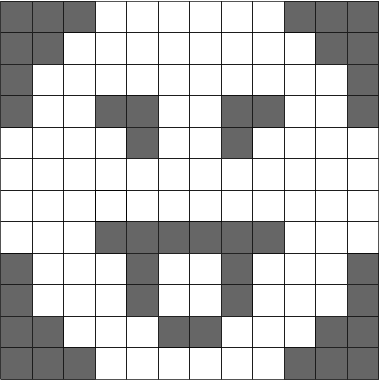
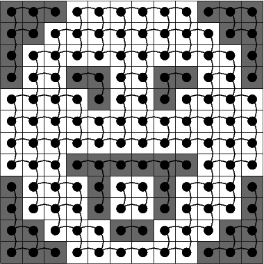

|
INFO607
|
L'objectif de ce TP est de vous faire mettre en oeuvre une structure de données efficace pour les ensembles disjoints : la forêt. On se servira de cette structure pour faire de la segmentation d'image, c'est-à-dire une partition de l'image en zones d'intérêt.
Pour faciliter la visualisation, on utilisera la bibliothèque GTK (http://www.gtk.org) comme interface graphique. Elle permet de charger les images, de les afficher, d'avoir des boutons et sélecteur de paramètres, etc. Vous vous en êtes déjà servi en INFO505 (http://www.lama.univ-savoie.fr/~lachaud/Cours/INFO504/Tests/doc/html/tp3.html) pour le TP Tetris graphique.
Pour vous faire gagner du temps, on vous donne une application de base union-find.c , qui charge une image et permet de choisir entre deux pixbufs pour la visualisation (l'image en entrée et l'image de sortie calculée).
Prenez d'abord le temps de bien comprendre le code écrit, le source est consultable là: union-find.c et est présent dans l'archive, le makefile est ci-dessous:
Pour l'exécuter, on pourra lui donner en paramètre un nom de fichier image (JPG, PNG, PGM, etc).
prompt$ make prompt$ ./union-find papillon-express.jpg
GTK, et plus précisément GDK, voit les images sous forme de tableaux d'octets (type unsigned char ou guchar), appelé GdkPixbuf. Chaque pixel est en général codé sur 3 octets :
Dans l'image, le GdkPixbuf commence par stocker le pixel le plus en haut à gauche, puis stocke les pixels ligne par ligne. Les pixels d'une même ligne sont à la suite les uns des autres (donc tous les 3 octets). Pour passer d'une ligne à une autre, on ajoute rowstride octets au début de l'adresse du pixel de la ligne précédente.
On crée un type Pixel pour simplifier l'accès aux pixels. Le bout de code ci-dessous montre comment mettre la composante rouge de tous les pixels d'une image à fond.
On voit que les fonctions selectInput et selectOutput sont des fonctions "call-back" ou réaction qui sont appelés lors d'un événement précis. Elles reçoivent en paramètre un pointeur, qui est ici le pointeur vers la variable contexte. Celle-ci nous permet donc d'accéder aux données utiles pour faire la segmentation.
L'objectif de la segmentation d'image est de réaliser une partition de l'image en régions d'intérêt, afin de simplifier son analyse postérieure, notamment pour la reconnaissance ou l'indexation. Une région est souvent définie comme un ensemble de points connexes du plan. Pour faire simple, il y a deux grandes familles de techniques:
Evidemment, on fait souvent un mélange de ces deux approches duales. Ici, ce que vous allez faire relève des deux approches:
On commence par faire un traitement très simple sur l'image, le seuillage par un niveau de gris T entre 0 et 255. Il s'agit tout simplement de transformer l'image donnée en entrée en une image noir et blanc telle que:
input (obtenu par un appel de greyLevel).output est mis noir (appel de setGreyLevel avec 0)output est mis blanc (appel de setGreyLevel avec 255)Créer donc un GtkScale et un bouton "Seuiller" et rajoutez les dans l'IHM pour que l'utilisateur puisse choisir son seuil et lancer le seuillage. L'image seuillée sera placée dans le pixbuf output du contexte.
N'oubliez pas de stocker le widget dans le contexte pour que vous puissiez accéder à la valeur choisie dans votre réaction seuillerImage. On utilisera la fonction gtk_range_get_value pour récupérer la valeur du widget. Cela donnera quelque chose du genre:
On va maintenant coder une structure Union-Find pour calculer les composantes connexes de l'image seuillée. A une image seuillée, on associe un graphe dont les sommets sont les pixels et les arêtes relient deux pixels qui se touchent si ils ont même valeur. On cherchera à extraire les composantes connexes de ce graphe, c'est-à-dire les parties où il existe un chemin entre pixels. Dans un premier temps, on code une structure Union-Find, dans un deuxième temps on l'utilisera sur l'image.
Une présentation plus détaillée est à la fin de la Leçon 3 d'INFO607. Les forêts constituent la structure de données la plus efficace pour coder les problèmes utilisant les ensembles disjoints (i.e. \( S = \cup_i S_i \) et \( \forall i \neq j, S_i \cap S_j = \emptyset \)).
Chaque sous-ensemble est représenté par un arbre, dont les noeuds sont les objets appartenant à l'ensemble et la racine est le représentant de l'ensemble. Chaque noeud d'un arbre a donc un pointeur vers son parent. La racine pointe vers elle-même et est le représentant du sous-ensemble constitué de tous les noeuds de l'arbre. Les fonctions sur les ensembles disjoints sont mis en oeuvre ainsi:
Créer-Ensemble(x) crée simplement un arbre a un seul noeud x (coûte \( \Theta(1) \)).Trouver(x) remonte d'un noeud x jusqu'à sa racine et retourne la racine, ce qui coûte \( \Theta(k) \) où k est la profondeur du noeud.Union(x,y) relie la racine de x à la racine de y, si x et y n'ont pas le même représentant (i.e. la même racine). Pour ce faire, il suffit donc de remonter à la racine de chaque arbre et de modifier un pointeur.Telle quelle, cette implémentation n'est pas plus rapide que celle utilisant les listes chaînées. On applique deux heuristiques à cette structure de façon à la rendre la plus efficace possible.
Trouver, tous les noeuds traversés pour trouver la racine, sont modifiés de façon à ce que leur parent soit directement la racine. Il est clair que cette opération ne rajoute pas de surcoût en temps.Ces heuristiques ont un effet très important sur la complexité amortie des opérations sur les ensembles disjoints. On a :
Théorème [Tarjan 1975]. Si on utilise les forêts d'ensembles disjoints avec les heuristiques d'union par rang et de compression de chemin, alors une séquence arbitraire de \( m \) opérations Créer-Ensemble, Trouver, Union prend un temps \( O(m
\alpha(n)) \), où \( \alpha(n) \) est une fonction qui croît extrêmement lentement ( \( n \le 4 \) dans tous les cas concevables).
La difficulté est de coder la notion abstraite d'Objet (ou d'Element) définie en cours. L'Objet stockera un pointeur vers le pixel associé, son rang et un pointeur vers son père. On aura exactement un Objet par Pixel. Nous procéderons ainsi:
On va créer autant d'Objet que de pixels. On les place dans un grand tableau d'Objet, indicés de 0 à width*height-1, dans l'ordre habituel. Au début, chaque Objet doit pointer sur le bon pixel, avoir rang 0, et son père c'est lui-même. Ecrivez donc la fonction creerEnsembles qui fait ce travail et retourne ce tableau d'Objet alloué dynamiquement. Son prototype sera:
pixel et pere sont remplis correctement. Au besoin, me demander.Il faut ensuite créer les fonctions usuelles:
Vous créerez les deux versions de Union (avec ou sans Union par rang), et les deux versions de Trouver (avec ou sans compression de chemin).
L'image seuillée est vue comme un graphe dont les sommets sont les pixels, et les arêtes relient deux pixels adjacents si ils ont la même valeur. Voilà le graphe (implicite) de la petite image binaire ci-dessous.

Image binaire |

Son graphe de connexité induit. |
Créez maintenant un nouveau bouton "Composantes connexes" avec une réaction ComposantesConnexes. Elle réalisera l'algorithme ci-dessous:
0) elle travaillera directement sur le \c pixbuf_output du contexte, en supposant que l'on a déjà appelé \c seuiller dessus.
1) Objet* objets = CreerEnsembles( ... ); // elle commence par créer le tableau d'\c Objet.
2) Soit i = 0, le numero de l'objet courant
3a) Pour toute paire d'objets objets[i] et objets[i+1] adjacents horizontalement,
si ils ont même valeurs, on fait l'union.
3b) Pour toute paire d'objets objets[i] et objets[i+width] adjacents verticalement,
si ils ont même valeurs, on fait l'union.
4) On reparcourt tous les objets et on affecte une couleur aléatoire à tous les objets
qui sont des représentants
5) On reparcourt tous les objets et on leur affecte la couleur de leur représentant
6) on force le réaffichage pour voir le résultat.
Sur l'exemple précédent du papillon seuillée à 100, voilà ce que vous obtenez:
On vérifiera que l'efficacité de la structure Union-Find est très dépendante des deux heuristiques d'optimisation. Pour mesurer le temps, on pourra utiliser à profit le bout de code suivant (Linux):
Il faudra modifier les deux lignes suivantes dans le Makefile:
CFLAGS=-g -Wall -Werror -pedantic -std=c11 -D_POSIX_C_SOURCE=199309 GTKLIBS:=$(shell pkg-config --libs gtk+-3.0) -lrt
Vous ferez un tableau où vous mesurerez les temps d'exécution avec plusieurs images de tailles différentes croisées avec les 4 algos Union-Find possible (Union-Find bête, Union-Find avec union par rang, Union-Find avec compression de chemins, Union-Find avec union par rang et compression de chemin). Vérifiez que le temps d'exécution est quasi-linéaire dans le dernier cas.
Pour faire plus "joli", plutôt que d'afficher une couleur aléatoire pour une région, on va afficher la couleur moyenne de tous les pixels de la même région. Pour nous, couleur moyenne sera les moyennes respectives de chaque canal de couleur (ce qui est un peu faux du point de vue vision humaine). On adapte la fonction précédentes ComposantesConnexes dans sa deuxième partie. On se donne d'abord une structure pour stocker les moyennes de couleur:
Ensuite, les points 4), 5) et 6) de l'algorithme précédents sont remplacés par:
Cela vous donne sur l'exemple papillon un affichage similaire à ci-dessous:
Le seuillage est bien souvent trop limité. En général on utilise des techniques plus évoluées comme les K-means, la segmentation par minimisation d'une énergie, la segmentation supervisée, etc. Nous proposons ici une petite évolution de l'approche précédente, appelée par certains auteurs la connexité floue.
On utilise les définitions suivantes. Soit \( \rho(x,x') \) une fonction appelée similitude qui retourne un nombre >= 0 étant donné deux pixels adjacents x et x'. Plus \( \rho \) est proche de 0, plus les pixels x et x' sont similaires. On dit que deux pixels arbitraires x et y (pas forcément adjacents) sont \( \alpha \)-connexes (pour \( \alpha \ge 0 \)) si et seulement si il existe un chemin de pixels deux à deux adjacents entre x et y tels que chacun de ces pixels adjacents ont une similitude inférieure ou égale à \( \alpha \).
La relation d' \( \alpha \)-connexité est donc une généralisation de la connexité où deux pixels adjacents devaient être identiques (cf 2 Seuillage de l'image et 3 Découpage de l'image seuillée en composantes connexes). Maintenant, ils ont seulement besoin d'être similaire. En revanche, l'algorithme Union-Find fonctionnera toujours.
0) elle travaillera directement sur le \c pixbuf_output du contexte, en supposant qu'on a copié l'input dessus avant.
1) Objet* objets = CreerEnsembles( ... ); // elle commence par créer le tableau d'\c Objet.
2) Soit i = 0, le numero de l'objet courant
3a) Pour toute paire d'objets objets[i] et objets[i+1] adjacents horizontalement,
si ils sont similaires, on fait l'union.
3b) Pour toute paire d'objets objets[i] et objets[i+width] adjacents verticalement,
si ils sont similaires, on fait l'union.
4) On calcule la couleur moyenne de chaque région que l'on donne au représentant.
5) On affecte à chaque pixel la couleur moyenne de son représentant.
6) on force le réaffichage pour voir le résultat.
On peut définir plein de fonctions "similitude". On va en créer une qui se base sur la représentation TSV des couleurs ou Teinte / Saturation / Valeur (http://fr.wikipedia.org/wiki/Teinte_Saturation_Valeur). Cette représentation est un peu plus représentative de notre perception des couleurs (sans être idéale). On représentera une couleur hsv avec le type:
En vous inspirant des formules données sur la page wikipedia, vous écrirez une fonction tsv ainsi de prototype
La similitude sera définie comme une distance pondérées entre teintes, saturations et valeurs des deux pixels:
Adaptez donc le code précédent de ComposantesConnexesEnCouleurMoyenne pour réaliser cette segmentation. Sur les images papillon-express et kowloon-1000, cela donne les résultats ci-dessous.
Vous pourrez bien sûr essayer d'autres fonctions similitudes et d'autres images.